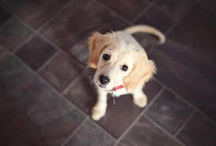
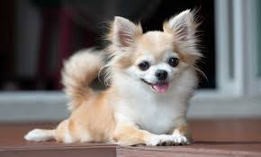
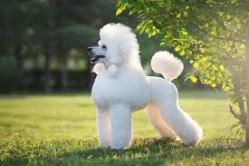
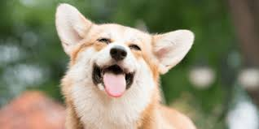
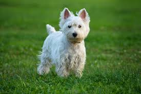
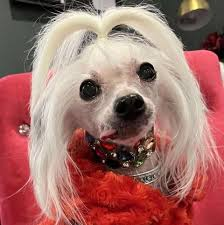
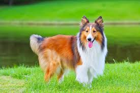
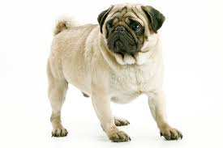
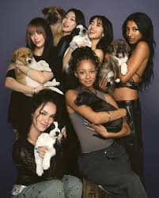
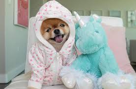

Are ALL DOGS just how they act because of their breed? Right? Well not always.It depends on how we take care of them.If we take care of a Great Dane just like we took care of it as a puppy, it will think it is small and still a baby even if it is huge and a senior dog.

For example Chihuahua (pronounced chi.wa.wa), people think they are feisty naturally, but in reality it's because of how YOU are taking care of it. If we keep thinking like it is tiny, which it is tiny but it will be very naughty and bark a lot. So be careful and take care of it how you would like any other dog but do research on what to do and what not to do.

Another example is the Poodle. Poodles are very intelligent so it is harder to train them at a later age. So if you train Poodles when it's like 5 years old it will not listen. So if you get a Poodle while its a puppy, it will listen and it won't be hard to train. Also don't think it is harsh to train them as a puppy or they won't learn

If we start training the dog will be obedient, loyal, and much more.But training does not mean beating up. If you are cruel to the dog then it will be scared.So during training be a bit strict with the dog but at other times bond with the dog. The dog will love you if you train it and love it, it will also understand that you are the boss around here.If you shower the dog with too much love than it will understand it is the boss and that you are the weaker one and it has to protect you. Some behavior the dog will have if it understands you're the boss is not barking when people are around and it will listen to things such as sit,stay,down,etc.But a dog that thinks it is the boss might act the oppisite way.

The Secret Ingredient: A dog's behavior is a mirror of your care. While breeds have their own quirks, your patience and love turn those instincts into a happy best friend. Better care = a better dog.

Chinese crested, the worlds "ugliest dog". I disagree all dogs are cute
SHELTIE!
Pugs are so cute!
KATSEYE and DOGS!
Jiffpom!{kind=link}
{kind=link}
{kind=link}
{kind=link}
{kind=link}